© Obeo 2011 - All rights reserved. This program and the accompanying materials are made available under the terms of the Eclipse Public License v1.0
Authors Gonzague Reydet / Cédric Brun / Yvan LussaudContact cedric.brun@obeo.fr / yvan.lussaud@obeo.fr
This UML modeling environment is based on the Obeo Designer product. It is under an
Open Source license (EPL) and the source code is hosted on github.
It is intended to cover most use cases behind the usage of UML, and more importantly to be reused when you apply a
model driven approach wich uses both UML and some DSL. Everything should integrate seamlessly in the same environment.
We’re constantly looking for feedback about this modeler, if you think something is missing, some behavior is weird or even just to tell us you are happy with it in its current state, please come and exchange on the Obeo Network
Fill in our survey!
Feel free to fork the code, adapt it for your need and trigger a pull request.
This section describes how to start using the UML designer either from existing UML models or by creating a new one.
Import the TravelAgency project using the menu File/New/Example....
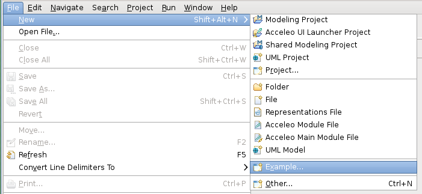
Pick the Travel Agency UML wizard and click on Next and then Finish.
Click Finish on the wizard and a TravelAgency project appears in your workspace.
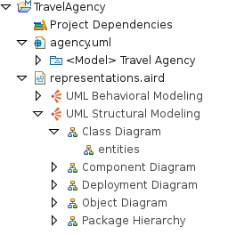
When the project gets opened, you will be greeted with the main package hierarchy diagram.
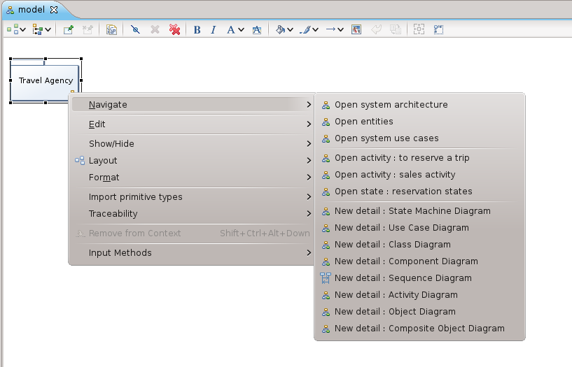
From here you can navigate to existing diagrams by right clicking on the Model.
To create a new UML project , enable the Modeling Perspective.

Then click on the wizard shortcuts at the top-right of the Eclipse Workbench. Select New UML Project.
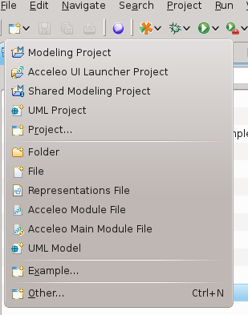
You can choose specific name for the project and the root element for the project on the next pages.
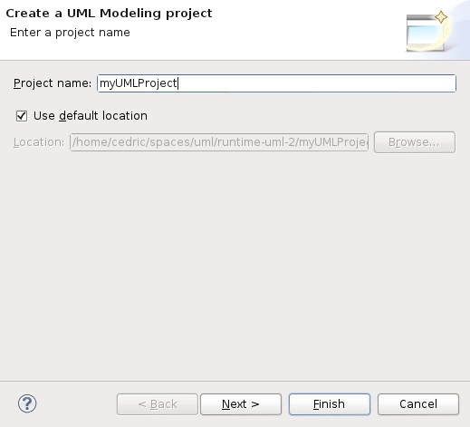
When you press the Finish button, the projects gets created and automatically enabled the UML viewpoints.
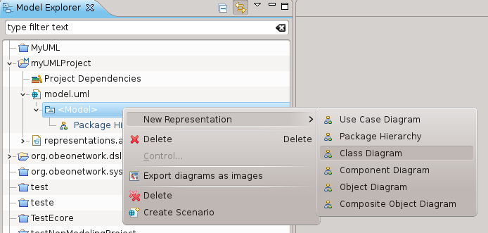
Now you can right click on the displayed package to create all the available diagrams or use the palette to create the package structure that fits to your needs. You can also open the Package hierarchy diagram and starts from here:
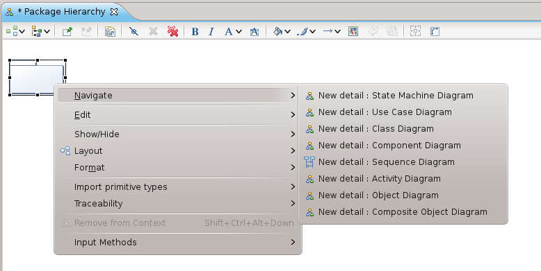
To create a new UML design on existing UML models, simply drag & drop the models in the Project or use the Add Model action available on the Project Dependencies item.
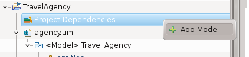
Two viewpoints are specified on the UML designer each bringing the following views:
You can select either viewpoints or both depending on your use case. Note that the Package hierarchy diagram is the entry point to create new diagrams such as Activity or Sequence diagrams. So it is advised to select at least the UML Structural modeling viewpoint.
The Package Hierarchy diagram is the starting point of your modeling task. It shows you
the structure of your model (packages and sub-packages) and enable the creation of the other diagrams.
To create a class diagram you should right-click on your model or on a package and pick navigate and then new Class Diagram.
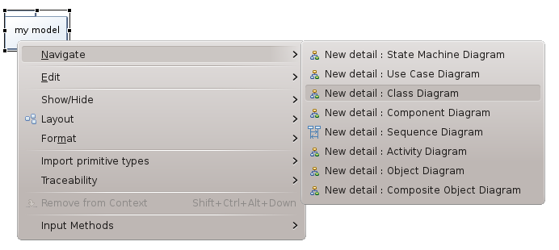
To create a deployment diagram you should right-click on your model or on a package and pick navigate and then new Deployment Diagram.
All the elements you can create in a class diagram are available through the palette.
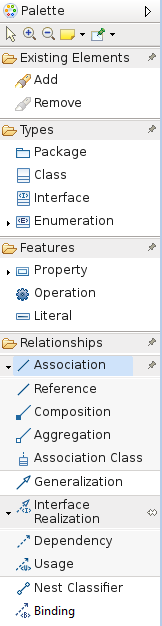
You also have the ability to create elements in a contextual way related to the currently selected elements.
If your pointer is on the diagram background, after a few seconds you should see the following assistant :
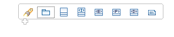
If your pointer is on a class the assistant will be :

The generic way to edit element values is using the properties view. If it is not opened yet
you can open it clicking on the Window menu, then Show View and then Properties

To edit a property you should then enable the Semantic tab :
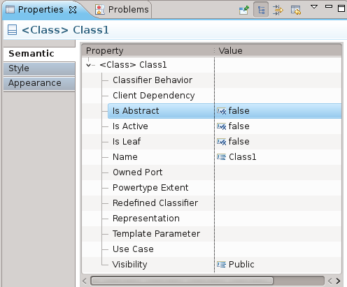
To define a Generic Class, use the direct edit tool:
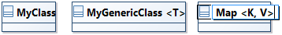
To define a Binding, use the create edge tool called «Binding» from a Class to a Generic Class.
You may notice that «?» refers to an undefined actual type:

To specify the binding association from the formal to the actual type use also the direct edit tool:

UML in colors is an object modeling technique proposed by Peter Coad, Eric Lefebvre, and Jeff De Luca in a series of articles in 1999.
An Archetypes layer is available in the UML Designer class diagram.
When the layer is selected, new tools are available in the palette :
The modeling in color patterns and strategies are built around the idea of class archetypes.
It exists four different kind of archetypes :
The Domain Neutral Component (DNC) is the common pattern applied with the UML in colors technique.
To create an archetype in a class diagram just select an archetype from the palette of the tooltip.
The archetypes are stored in UML model as stereotyped classes.
To change an existing class to an archetype just selects the tool from the palette and the existing class. The stereotype of the selected archetype is applied on the class which is colored.
UML in colors examples are available from Eclipse menu File > New > Example... > UML > Uml in colors.
For more detailed explanation on UML in colors have a look to Peter Coad’s website.
We added a few accelerators so that you can quickly edit Attributes in a class just by typing the label. Typing :
aNewName will update the attribute name.aNewName : SomeType will update the attribute name and will look for the datatype with the given name. If found it will /someName will set the Attribute as derived.=someValue will set the default value of the Attribute. [0..1] will set the multiplicity of the attribute to 0 for the lower bound and 1 for the upper bound.[0..*] will set the multiplicity of the attribute to 0 for the lower bound and unbounded for the upper bound.All the elements you can create in a deployment diagram are available through the palette.

You also have the ability to create elements in a contextual way related to the currently selected elements.
If your pointer is on the diagram background, after a few seconds you should see the following assistant :

If your pointer is on a node the assistant will be :

In deed, a node is a composite element.
We added a few accelerators so that you can quickly edit labels on elements or edges just by typing. Typing :
aNewName will update the label.
To create a new profile, right_click on a model element in the Model Explorer and select the menu New Representation > Profile Diagram.
Another solution is to create a new UML model and select Profile as root element.
A tool is available in the palette to create a stereotype. 

By default, a stereotype does not extend any metaclass.
A tool is available in the palette to import a list of metaclass.

It opens a wizard which proposes all the available UML metaclass:
It is possible to filter the listed metaclass by :
A tool is available in the palette to create extensions for a stereotype.

According to the context, this tool will create an Extension edge linking Stereotype to an Element Import or a Generalization edge linking two Stereotypes. An Element Import is an UML reference to an imported metaclass in a profile.
This tool allows the creation of an UML “Association” between two stereotypes. 
Furthermore, this tool can suggest to reuse the existing relationship in the metamodel UML, if this relationship can link the metaclass referenced by the target and the source stereotype of the wanted association.
If the user selects an existing relationship of the UML metamodel, then the tool will import the metaclass of the selected relationship and create a new stereotype that extend this relationship. Besides, the tool link graphically the new created stereotype and the source and target stereotype of the association
The palette provides a tool to define a profile in order to be able to apply this one for other UML model in the workspace. This tool add information about the version to the profile as Ecore Annotation. Mainly, the information required for the versioning are:

Another tool is available to undefine a profile, this tool removes all the EPackage representing the definition from the profile.
An export profile tool is available from the palette to export a profile as a jar file. This jar can be added to an eclipse platform to provide a profile as a registered package. The export operation creates an EMF project with an ecore file based on the profile model. Then an extension for the profile is added to the generated project (in “uml.generated_package” and “ecore.uri_mapping”). Finally, the tool builds and exports the created EMF project for the profile as a Deployable plug-in.
The tool requires some necessary information for the creation of the deployable plug-in:


It might happen that for some reason you have an Association instance in your package which doesn’t have the proper ends. In that case
the class diagram will show the broken associations as nodes :

You can use the Association tools in the palette (Association, Reference, Composition and Aggregation) to re-attach the Association to a classifier.
A Class Diagram created on a Package or a Model will display the contained classes but also the classes which are contained in Components of the selected Package.
Thanks to this one can easily define a Class Diagram displaying all the entities abstracting the fact that they might be split across components.

You can link two ports using assembly or delegation connectors.
Assembly Connector :

Delegation Connector :


As a component :

In a component :

Using ports :

Or directy on the components :


The Use Case Diagram will display any UseCase not being affected to a subject on the canvas. If a subject is affected, then the use case
will be displayed directly within this subject.
Dragging a use case from a subject to the canvas (and the other way around) will set or unset the subject accordingly.


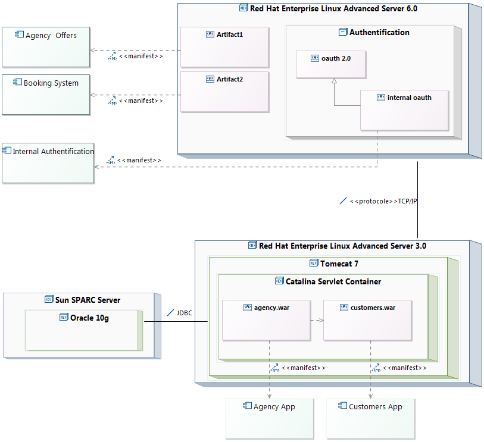


We have two way to deploy an artifact: